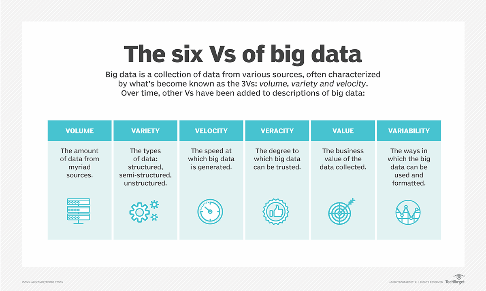

Big Data is transforming the architecture of the web in profound ways, driving new structures and technologies to handle the vast influx of data. By examining
data mining,
metadata, and
streaming service management, we can understand how modern web systems evolve to meet the demands of an increasingly data-driven world.
What is Big Data?
Big Data refers to extremely large and complex datasets that cannot be managed or processed using traditional data processing tools.
The concept of Big Data has evolved over time, leading to various definitions, but the most widely accepted characterisation is based on the "V's" framework, which outlines the key attributes of Big Data. Originally, Big Data was defined by three Vs—Volume, Velocity, and Variety—but over time, other V's have been added to describe its growing complexity and importance.

Data Mining
Data mining refers to the process of discovering patterns, correlations, and insights from large datasets. By analysing massive amounts of data, organisations can extract valuable information that can be used to make informed decisions, optimise processes, and predict future trends. Data mining is essential in industries such as e-commerce, healthcare, finance, and marketing.
How it works?
- Data is collected from various sources (such as social media, IoT devices, and transaction records).
- Advanced algorithms analyse the data to uncover hidden patterns and relationships.
- These insights are used to guide decision-making, enhance user experiences, and improve business operations.
Common Data Mining Techniques
- Classification: Assigning data into predefined categories (e.g., classifying customers based on purchase behaviours).
- Clustering: Grouping similar data points together (e.g., segmenting users based on browsing patterns).
- Association: Discovering relationships between variables (e.g., identifying which products are frequently bought together).
- Regression: Predicting a continuous value based on other variables (e.g., forecasting sales based on past trends).
Examples
- Retail and E-commerce: Amazon uses data mining to recommend products based on user history.
- Healthcare: Hospitals analyse patient data to predict the likelihood of diseases and personalise treatments.
The rise of Big Data has significantly impacted web architecture, leading to the development of new technologies and approaches to manage, store, and process enormous volumes of data. Traditional data processing methods are insufficient, and modern web architecture has adapted to meet the challenges posed by Big Data.
Scalability and Distributed Systems
- Challenge: Big Data systems must handle vast volumes of data that are continuously generated from various sources. Centralised systems cannot manage this level of data efficiently.
- Solution: Modern web architecture incorporates distributed systems, where data is processed and stored across multiple servers. Technologies such as Hadoop and Apache Spark enable parallel data processing, allowing systems to scale horizontally by adding more servers as data volume grows.
Example: Companies like Google and Facebook use distributed systems to manage data generated by billions of users in real-time.
Real-Time Data Processing
- Challenge: The speed (velocity) at which data is generated, especially from IoT devices and social media, requires web systems that can process and respond to data instantly.
- Solution: Web architectures now integrate real-time data processing frameworks such as Apache Kafka and Apache Flink, which handle streaming data. These systems allow businesses to analyse data as it arrives, enabling real-time decision-making.
Example: Streaming platforms like Twitch and Netflix analyse user data in real-time to optimise streaming quality and recommend content.
Data Storage and Management
- Challenge: The volume and variety of Big Data demand storage solutions that can handle structured, unstructured, and semi-structured data.
- Solution: Web architectures have shifted towards cloud-based storage solutions like Amazon S3 and Google Cloud Storage, which offer flexibility, scalability, and cost-effectiveness. These solutions allow organisations to store data in its raw form and process it as needed, reducing the need for pre-defined schemas.
Example: E-commerce platforms store massive amounts of customer interaction data in cloud databases, which are analysed for marketing, inventory management, and customer service.
Metadata
Metadata is a set of data that describes and gives information about other data. Think of it as a label or tag that provides details about a file or piece of information. For example, when you take a photo with your phone, metadata can include the date and time the photo was taken, the location, the camera settings, and more. This extra information helps organise, categorise, and make sense of data.
In the world of Big Data, metadata is like a roadmap or a guide that helps us navigate through the massive and complex landscape of information. Imagine trying to find a specific book in a gigantic library without a catalogue or labels on the shelves. It would be nearly impossible! Metadata serves as that catalogue, providing essential details about the data so that we can understand, find, and use it effectively.
Data Organisation
- Categorising Data: Metadata helps categorise data by providing information about its content. For example, in a huge collection of social media posts, metadata can include tags like the type of content (text, image, video), the topic discussed, the language used, and even user demographics. This makes it easier to group similar data together.
- Data Models and Schemas: Metadata defines the structure of data in databases, such as tables, columns, and relationships. This structure is essential for storing and retrieving information efficiently, especially when dealing with large datasets.
Data Discovery
- Enhanced Search Capabilities: When we search for something on the internet or in a database, metadata helps narrow down the results. For example, if you’re looking for movies from the 1990s on a streaming service, metadata tags like the release year, genre, and director make this search possible and efficient.
- Facilitating Advanced Queries: In complex datasets, metadata enables advanced search queries. For example, a company might use metadata to filter customer data based on purchase history, geographic location, or engagement with marketing campaigns.
Improving Search and Analysis
- Connecting Different Data Sources: In Big Data, information often comes from various sources, like social media, e-commerce, and sensor data. Metadata standardises these diverse sources by providing common reference points, such as time stamps or geographic coordinates, making it easier to combine and compare them.
- APIs and Data Sharing: Metadata facilitates data sharing between systems and applications through APIs (Application Programming Interfaces). It provides the necessary details, such as data format and access protocols, to ensure that different systems can communicate and share data effectively.
Data Quality and Accuracy
- Ensuring Data Accuracy: Metadata includes information about data provenance, or the origin of the data, which helps verify its accuracy and reliability. For example, knowing who created the data and when it was last updated can be crucial for research and decision-making.
- Data Lifespan and Usage Policies: Metadata can include rules about how long data should be stored (data retention policies) and who is allowed to access or modify it. This is especially important in sectors like healthcare or finance, where data privacy and security are critical.
Streaming Service Management
Streaming service management involves organising, storing, and delivering digital content like movies, music, and videos over the internet. Companies like Netflix, Spotify, and YouTube are examples of streaming services that manage vast libraries of content and deliver it to users on demand.
Managing a streaming service involves several key tasks:
- Content Storage: Storing massive amounts of data, including videos, audio files, and metadata.
- Content Delivery: Making sure content is delivered quickly and efficiently to users around the world. This often uses Content Delivery Networks (CDNs) that cache content close to users.
- User Experience: Providing features like content recommendations, fast loading times, and high-quality streaming without buffering.
- Analytics and Personalisation: Analysing user behaviour to recommend new content based on their preferences.
Content Recommendations
Big Data’s Role:
- Streaming platforms like Netflix and Spotify gather data on what content users interact with, including what they watch or listen to, the time spent on each piece of content, and their browsing habits.
- This data is used to create personalised recommendations, improving user engagement and satisfaction. For instance, Netflix’s recommendation engine suggests movies and shows based on viewing history, ratings, and even how long a user watched a particular type of content.
Effect on Architecture:
- To process and analyse this enormous amount of data, streaming services use big data technologies like Hadoop, which stores and processes large datasets, and Apache Spark, which performs real-time data processing.
- The backend infrastructure is designed to be scalable and capable of handling real-time analytics. This often involves using distributed databases such as Cassandra or MongoDB, which can efficiently manage and query large datasets across multiple servers.
Real-Time Streaming and Adaptive Bitrate
Big Data’s Role:
- Streaming services monitor the quality of the user’s internet connection and the specifications of their device (like screen resolution) to dynamically adjust the quality of the video or audio being streamed. This is called adaptive bitrate streaming.
- By analysing network conditions in real-time, services can switch between different quality streams to prevent buffering, thus ensuring a smooth viewing experience.
Effect on Architecture:
- The architecture for real-time streaming involves microservices that handle different tasks like encoding, caching, and distribution of content. These microservices work together to adjust the stream quality based on real-time data.
- Tools like Kafka or RabbitMQ are used for real-time data streaming and processing. These tools help in the continuous monitoring of network conditions and user interactions, ensuring the stream quality is adjusted on the fly.
Predictive Maintenance
Big Data’s Role:
- Predictive maintenance involves using big data analytics to foresee and prevent potential technical issues that could disrupt the service. For example, by analysing server logs, network traffic, and user error reports, streaming platforms can identify patterns that may indicate an impending system failure.
- This helps in proactive troubleshooting, reducing downtime, and maintaining a seamless user experience.
Effect on Architecture:
- The architecture must support the ingestion and analysis of large volumes of real-time data. Technologies like Apache Kafka or Amazon Kinesis are often used for data streaming, while machine learning models are deployed to detect anomalies in the data.
- The system also needs to be highly available and fault-tolerant, as it is crucial to react quickly to potential issues. This often involves using cloud-based solutions that provide auto-scaling and automated recovery features.
Scalability and Flexibility
Big Data’s Role:
- As the number of users and the amount of content grow, streaming services need to scale their infrastructure to handle increased traffic and data loads. Big data analytics helps predict when these spikes will occur, such as during the release of a popular show or live event.
- By analysing historical data, services can allocate resources dynamically to meet demand, ensuring that users experience no delays or interruptions.
Effect on Architecture:
- The architecture is typically cloud-based, utilising platforms like AWS, Google Cloud, or Microsoft Azure. These platforms offer scalable storage and computing resources that can be adjusted based on demand.
- Containerisation tools like Docker and orchestration platforms like Kubernetes are often used to deploy and manage applications in a scalable and flexible manner. This allows streaming services to add or remove resources easily, maintaining performance during peak times.
Enhanced Security and Fraud Detection
Big Data’s Role:
- Streaming platforms collect data to monitor for unusual activity, such as multiple logins from different locations, which could indicate account sharing or hacking attempts. Analysing this data helps in detecting and preventing fraud and security breaches.
- For example, services like Netflix use machine learning models trained on user behaviour data to identify suspicious activity patterns.
Effect on Architecture:
- The architecture for security and fraud detection needs to support real-time data analysis and rapid response. Tools like Elasticsearch are used to search and analyse security logs, while machine learning models deployed in the cloud can process large volumes of data and detect anomalies.
- Data security measures, including encryption and secure APIs, are integrated into the architecture to protect user data and ensure compliance with regulations like GDPR.
Use of Big Data: Netflix
Netflix is an example where big data and web architecture come together, learn how Netflix utilises big data to provide personalised content recommendations, improve streaming quality, and make informed decisions about new shows and movies. Read more about this here.
PowerPoint
2.5 Big Data on Web.pptx
▶
Video won't play offline. Watch on Canvas ·
all moduleshttps://kingsnsw.sharepoint.com/sites/CanvasSharepoint/_layouts/15/Doc.aspx?sourcedoc={e2a6b39e-c18d-472d-87de-b215c4f87ed6}&action=embedview&wdAr=1.7770833333333333
![[online-only image]](https://kingsnet.kings.edu.au/images/UserUploadedImages/1754/banner2.jpg)